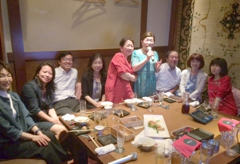

カラオケ倶楽部発足の儀
生命力、生きる喜び、祈り、慈悲、感謝の心、歌はそれらの全てを表現できる。心と心を結ぶ力がある。（「名字の言」より）2016年3月5日、平成4年卒幹事団による第1回幹事会がスタートした夜、「カラオケ同好会」が産声をあげました。
満を持しての誕生。
「何で今までなかったのか不思議なくらい」との声の下、若輩（と言っていいのか？）ではございますが、私、昭和60年卒 佐藤美智子が部長として、東京玉翠会の皆さまを歌で「つなぐ」お手伝いをさせていただく所存です。
のどに覚えのある方も、ない方も、皆さまで楽しく歌う場としていきたいと思いますので、どうぞよろしくお願いいたします。
（第34回東京玉翠会総会プログラム(2016.7)より）

第1回カラオケ倶楽部開催(2016.5.27) 部長 佐藤美智子(S60卒)
副部長 池田仁司(S61卒)
副部長 三好克浩(H2卒)
名誉顧問 淵崎正弘(S50卒)
顧問 白川真理(S52卒)